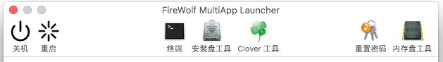

工具栏功能与应用程序

- 关机
点击该按钮后会立即关闭计算机。请注意，你不会收到任何二次确认的提示，请注意保存文件。
- 重启
点击该按钮后会立即重启计算机。请注意，你不会收到任何二次确认的提示，请注意保存文件。
- 终端
启动 macOS 的终端。
- 安装盘工具
内含安装盘制作工具。隶属于 FireWolf OS X PE 维护套件家族，本版本暂时停用。
- Clover 工具
内含 @crazybirdy 制作的 Clover EFI 安装/设置工具，可用于挂载 EFI 系统分区以及安装 Clover 到引导分区上。
请注意：Clover EFI 工具默认安装适用于传统 BIOS 的 Clover 引导。如果主板支持 UEFI，你可以把 EFI 系统分区根目录的 boot/boot6 文件删掉。
- 重置密码
启动 macOS 恢复分区自带的密码重置工具。
- 内存盘工具
启动内存盘工具来创建内存盘。请注意内存盘分区的大小，过多使用内存盘可能会产生大量内存交换进而导致系统运行缓慢。